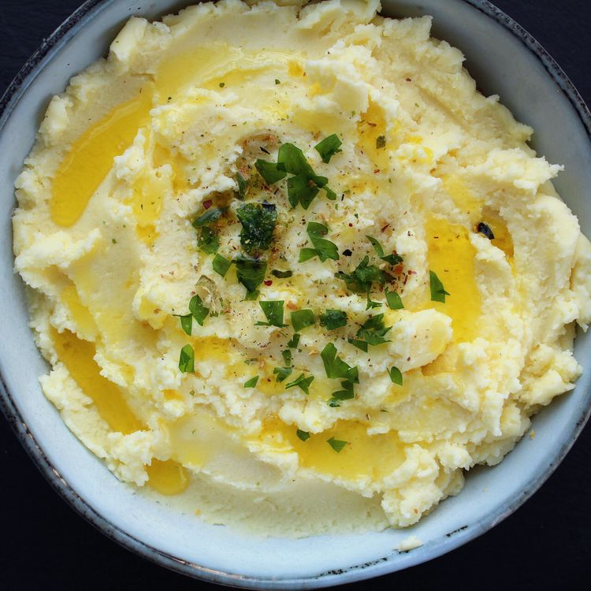

Garlic Mashed Potatoes

large bowl of garlic mashed potatoes with melted butter
Mashed potatoes are a delicious staple for the Thanksgiving table, made even better with the addition
of garlic (and lots of butter
Ingredients
- 8 potatoes, peeled and quartered
- ½ cup milk
- ¼ cup butter
- 2 cloves garlic, minced
- salt to taste
- 1 pinch ground white pepper
- 2 tablespoons sesame seeds
Steps
- Bring a large pot of water to a boil. Add potatoes and boil until soft, 20 to 25 minutes.
- Drain potatoes and place in a large bowl.
- Add milk, butter, garlic, salt, and pepper to potatoes. Beat with an electric mixer or mash with a potato masher until potatoes reach the desired consistency.
- Transfer potatoes to a serving bowl and sprinkle with sesame seeds.